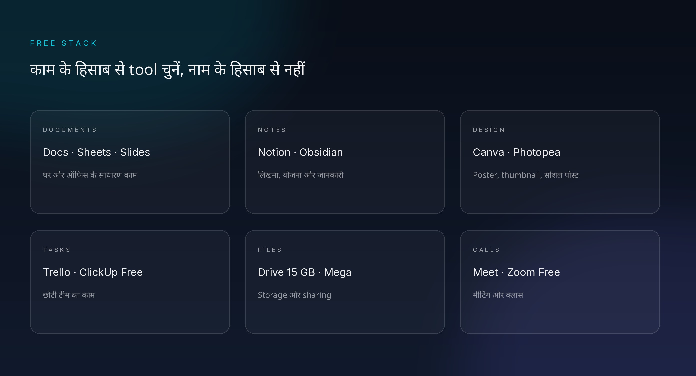
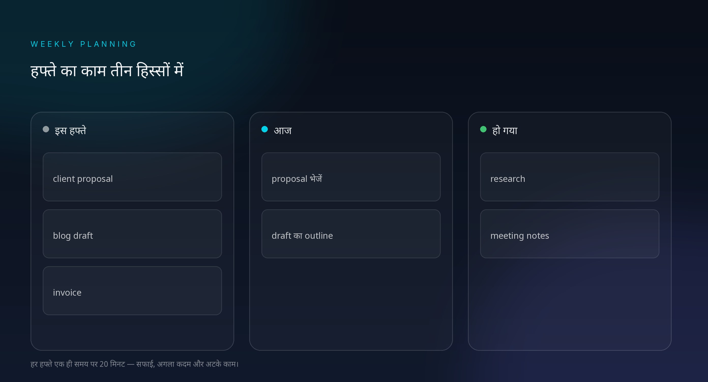

Free Productivity Apps: 12 Tools Jo Kaam Aasan Kar Dein
हर हफ्ते कोई नया app "productivity" के नाम पर आता है और हर बार लगता है कि अब काम व्यवस्थित हो जाएगा। असल में उलटा होता है — tools बढ़ते हैं, ध्यान बँटता है, और वही काम तीन जगह लिखा मिलता है। इसलिए ज़रूरत एक लंबी सूची की नहीं, कुछ सही tools की है।
इस आर्टिकल में मैं free productivity apps की चुनी हुई सूची दूँगा — documents, notes, tasks, design, बातचीत और automation तक। साथ में यह भी बताऊँगा कि free tier में क्या सीमाएँ आती हैं, data कहाँ रहता है, किस भूमिका के लिए कौन सा stack ठीक है, और हफ्ते में 20 मिनट की एक आदत जो पूरे system को चलाए रखती है।
छोटा जवाब: ज़्यादातर काम के लिए चार श्रेणियाँ काफी हैं — documents (Google Docs, Sheets), notes (Notion या Obsidian), tasks (Trello या ClickUp free) और बातचीत (Meet, WhatsApp)। design के लिए Canva free और automation के लिए Zapier या n8n। हर श्रेणी में एक ही tool चुनें और उसी पर टिके रहें।
Free apps chunne ke teen niyam
पहला — free tier की सीमा पढ़ें। हर app कुछ सीमा पर पैसा माँगता है — storage, members, history या export। जान लें कि आपकी सीमा कहाँ है, वरना जिस दिन ज़रूरत होगी उसी दिन दीवार आएगी।
दूसरा — data export जाँचें। आपका काम आपके पास रहना चाहिए। अगर किसी app से आप अपना data सामान्य format में निकाल नहीं सकते, तो वह free होने के बाद भी महंगा सौदा है।
तीसरा — कितने tools रोज़ खुलते हैं। जो app हफ्ते में एक बार खुलता है, वह system का हिस्सा नहीं है। तीन से ज़्यादा tools रोज़ खुल रहे हों, तो सरल बनाने की ज़रूरत है।
Documents aur spreadsheets
Google Docs, Sheets और Slides का free tier ज़्यादातर घरेलू और छोटे दफ्तर के काम के लिए काफी है। फायदा यह है कि सब कुछ browser में चलता है, sharing आसान है, और mobile पर भी ठीक काम करता है।
सीमा यह है कि बहुत बड़ी sheets और जटिल formulas पर यह धीमा हो सकता है। अगर आपका काम भारी data पर है, तो desktop software या database सही रहेगा।
LibreOffice एक free desktop विकल्प है, जो Word और Excel की फाइलें खोल सकता है। इंटरनेट के बिना काम करना हो या बड़ी फाइलें संभालनी हों, तो यह काम आता है।
Notes aur knowledge base
Notion का free plan व्यक्तिगत उपयोग के लिए अच्छा है — notes, tasks, wiki और database एक ही जगह। इसकी ताकत यह है कि आप अपनी ज़रूरत के हिसाब से ढाँचा बना सकते हैं; कमज़ोरी यह है कि ढाँचा बनाने में ही समय चला जाता है।
Obsidian आपकी notes को स्थानीय files के रूप में रखता है, जिससे data आपके पास रहता है और बिना internet भी काम होता है। व्यक्तिगत free उपयोग ठीक है, पर team के लिए paid plan चाहिए होगा।
दोनों में से एक चुनें। एक ही जानकारी दो जगह रखने से वह जल्दी पुरानी हो जाती है और फिर किसी पर भरोसा नहीं रहता।

Tasks aur planning
Trello का free plan सरल board के लिए काफी है — "करना है", "चल रहा है", "हो गया"। छोटी टीम और व्यक्तिगत काम के लिए यह सबसे कम घर्षण वाला विकल्प है।
ClickUp का free plan ज़्यादा features देता है — list, board, docs और goals। पर ज़्यादा features का मतलब यह भी है कि setup में समय लगेगा। अगर आपको सिर्फ काम की सूची चाहिए, तो सरल tool बेहतर है।
Google Calendar को हल्के में न लें। जो काम तारीख पर टिका है, वह task list से ज़्यादा calendar में ठीक रहता है। हर हफ्ते के शुरू में 30 मिनट का "planning" block डालें — यही सबसे असरदार आदत है।
Design aur content
Canva का free plan poster, thumbnail, सोशल पोस्ट और presentation के लिए पर्याप्त है। इसमें templates की संख्या बहुत बड़ी है, इसलिए शुरुआत तेज़ होती है। ध्यान रखें कि कुछ templates और elements paid हैं, और brand consistency के लिए अपने colors तथा fonts तय करके रखें।
Photopea browser में चलने वाला image editor है, जो Photoshop जैसी फाइलें खोल सकता है। free है और install नहीं चाहिए। छोटे editing कामों के लिए यह अच्छा विकल्प है।
एक सलाह — design tool से पहले message तय करें। अच्छा template गलत message को नहीं बचा सकता।
Batachit aur meetings
Google Meet और Zoom के free plans में समय की सीमा होती है, इसलिए लंबी मीटिंग के लिए पहले जाँच लें। छोटी टीम के लिए 30–40 मिनट की बैठक अक्सर काफी होती है — और यह सीमा एक अच्छी आदत भी बनाती है।
WhatsApp किसी परिचय का मोहताज नहीं, पर काम के लिए इसका इस्तेमाल साफ नियम माँगता है। एक-एक client के लिए अलग group, और decisions को हमेशा किसी document या task में लिखना — वरना चैट में सब कुछ खो जाता है।
Automation
Zapier का free plan कुछ सीमित tasks देता है, जो छोटे कामों के लिए काफी है — जैसे form भरने पर email भेजना या sheet में entry जोड़ना।
n8n खुद के server पर चलाया जा सकता है, जिससे data आपके पास रहता है और बहुत सारे tasks पर सीमा नहीं होती। इसमें technical सेटअप चाहिए, इसलिए यह तभी चुनें जब automation रोज़ का काम बन जाए।
Automation की सबसे अच्छी शुरुआत वह काम है जो हफ्ते में कम से कम तीन बार दोहराया जाता है और जिसमें कोई सोच नहीं लगती — copy-paste, reminder, report।
Bhumika ke hisaab se stack
| भूमिका | तीन tools | क्यों |
|---|---|---|
| Student | Docs + Calendar + Drive | नोट्स, समय और फाइलें एक जगह |
| Freelancer | Notion + Trello + Canva | client notes, काम और design |
| छोटी दुकान | Sheets + WhatsApp + Canva | stock, order और poster |
| छोटी टीम | ClickUp + Meet + Drive | काम, बैठक और दस्तावेज़ |
यह तालिका शुरुआत के लिए है, नियम नहीं। ज़रूरी बात यह है कि हर श्रेणी में एक ही tool हो, और सब लोग उसी पर सहमत हों।
20-minute weekly review
Tools अपने आप काम नहीं करते। हफ्ते में एक बार, एक ही समय पर, बीस मिनट निकालें और तीन काम करें।
- सफाई। हो गए काम हटाएँ, डुप्लिकेट notes मिलाएँ, और पुरानी files एक जगह रखें।
- अगला कदम। अगले हफ्ते के तीन सबसे ज़रूरी काम चुनें और उनकी तारीख calendar में डालें।
- अटके काम। जो काम दो हफ्ते से आगे नहीं बढ़ा, उसका कारण लिखें — जानकारी की कमी, किसी और का इंतज़ार, या आपकी रुचि। तीनों का इलाज अलग है।

AI ke free options ka sahi use
AI tools अब हर जगह हैं और ज़्यादातर का कोई न कोई free tier है। इनका सही उपयोग तीन कामों में होता है — पहला draft बनाना, दूसरा लंबे text का सारांश, और तीसरा विकल्प सुझाना।
जहाँ सावधानी चाहिए वह यह है — जो जानकारी संवेदनशील है, उसे free tool में न डालें। free plans अक्सर data के इस्तेमाल की अलग शर्तें रखते हैं, इसलिए एक बार पढ़ लें।
दूसरी सावधानी — जवाब पर आँख बंद कर भरोसा न करें। तारीख, संख्या और कानून वाले दावे हमेशा दूसरी जगह से जाँचें। AI का काम speed बढ़ाना है, ज़िम्मेदारी लेना नहीं।
Offline aur low-data ke liye
हर जगह अच्छा internet नहीं होता। ऐसे में तीन आदतें काम आती हैं — notes को स्थानीय रूप से रखना (जैसे Obsidian), documents को offline उपलब्ध करना, और महीने में एक बार ज़रूरी files का backup लेना।
Data बचाने के लिए images और video की quality घटाएँ, sync को सिर्फ Wi-Fi पर रखें, और ऐसे tools चुनें जो हल्के हों। छोटे शहरों और गाँवों में यह छोटी आदतें बड़ा फर्क डालती हैं।
एक और बात — जो काम पूरा हो गया, उसका एक स्थानीय copy रखें। किसी app के बंद होने या plan बदलने पर यही copy काम आती है।
Notifications aur focus
Tools की सबसे बड़ी कीमत notifications हैं। हर app चाहता है कि आप उसे बार-बार खोलें, और इसी दौड़ में ध्यान टूटता है। इसलिए शुरुआत में तीन नियम बनाएँ।
पहला — काम के app के notifications सिर्फ ज़रूरी चीज़ों पर रखें। Marketing updates और "new feature" वाले message बंद कर दें। दूसरा — दिन में दो तय समय पर messages और email देखें। तीसरा — काम करते समय फोन को दूसरी जगह रखें या silent करें।
Focus के लिए एक साधारण तरीका काम करता है — 25 या 50 मिनट का एक block, एक ही काम, और बीच में कोई tab नहीं। टाइमर किसी भी free app में उपलब्ध है; ज़रूरत सिर्फ एक साफ शुरुआत की है।
ध्यान रखें — productivity का मतलब ज़्यादा काम करना नहीं, ज़रूरी काम शांति से करना है। जो tool शोर बढ़ाए, वह productivity tool नहीं है।
काम का एक जगह होना
सबसे कम बात की जाने वाली आदत यह है — हर काम की एक जगह तय करें। जो काम तारीख पर है वह calendar में, जो किसी का इंतज़ार कर रहा है वह task list में, और जो जानकारी बाद में काम आएगी वह notes में।
जब यह बँटवारा साफ होता है, तो ढूँढने में लगने वाला समय बहुत घट जाता है। सबसे बुरी स्थिति वह है जब वही बात WhatsApp, notes और task list तीनों में अलग-अलग हालत में पड़ी हो।
एक हफ्ते तक यह नियम चलाकर देखें। ज़्यादातर लोग पाते हैं कि उन्हें नए tool की नहीं, बस एक तय जगह की ज़रूरत थी।
5 galtiyan jo sabse aam hain
पहली — हर नए app को आज़माना और पुराना data वहीं छोड़ देना। दूसरी — task list को notes की तरह भर देना, जिससे असली काम दब जाता है। तीसरी — free tier की सीमा न पढ़ना और महीने के अंत में अटकना। चौथी — team के लिए बिना सहमति के tool बदल देना। पाँचवीं — automation उन कामों पर लगाना जिनमें सोच लगती है।
पाँचवीं गलती सबसे महंगी है, क्योंकि उसमें समय बचाने की जगह नई गलतियाँ पैदा होती हैं। जो काम हर बार अलग होता है, उसे इंसान ही करे तो बेहतर है।
मैंने इन tools से क्या सीखा
सबसे बड़ी सीख यह रही कि productivity tool की संख्या से नहीं, आदत से आती है। जब मैंने tools घटाकर चार कर दिए और हर हफ्ते बीस मिनट की समीक्षा जोड़ी, तो काम पहले से ज़्यादा साफ हो गया — बिना कोई नया app लिए।
दूसरी सीख — free tier चुनते समय export का अधिकार देखें। जिस app से data निकालना मुश्किल हो, वहाँ साल भर का काम फँस सकता है।
तीसरी सीख — team के लिए एक ही जगह तय करें। अगर आधी टीम WhatsApp पर और आधी task app पर है, तो काम दो जगह बँट जाता है और कोई भी पूरी तस्वीर नहीं देख पाता।
अक्सर पूछे जाने वाले सवाल
क्या सब कुछ free में हो सकता है?
ज़्यादातर व्यक्तिगत और छोटे टीम के काम free tier में हो जाते हैं। जैसे ही storage, members या history बढ़ती है, कुछ plan लेना पड़ता है।
सबसे पहले कौन सा tool चुनें?
एक जगह notes और एक जगह tasks — इन दो से शुरू करें। बाकी तब जोड़ें जब ज़रूरत साफ दिखे।
क्या free apps data सुरक्षित रखते हैं?
यह app पर निर्भर है। privacy policy, data का स्थान और export का अधिकार देखें। संवेदनशील काम के लिए स्थानीय या self-hosted विकल्प बेहतर रहते हैं।
क्या AI tools भी free में मिलते हैं?
कई AI services का free tier होता है, पर उसकी सीमा और data नीति अलग होती है। काम के documents वहाँ भेजने से पहले शर्तें पढ़ें।
Tools बदलने का सही समय कब है?
जब कोई असली रुकावट हो — data निकालना मुश्किल हो, team बढ़ रही हो, या मौजूदा tool की सीमा रोज़ परेशान करे। सिर्फ नया दिखने पर न बदलें। साल में एक बार सूची देखें और जो tool तीन महीने से नहीं खुला, उसे हटा दें। यह छोटी आदत साल भर में कई घंटे बचाती है।
अगर आप अपनी टीम का काम व्यवस्थित कर रहे हैं, तो Agile methodology की गाइड और self-service apps वाला आर्टिकल मदद करेंगे। Presentation बेहतर बनाने के लिए AI presentation वाली गाइड पढ़ें।
आगे पढ़ें: documents और sheets के free plans Google Workspace पर, और notes तथा task tools की तुलना Notion की साइट पर देखें। Free plans और उनकी सीमाएँ बदलती रहती हैं, इसलिए खरीदने से पहले ताज़ा शर्तें पढ़ें।